~13 Door System~
4/6/2026
Creating the Door System
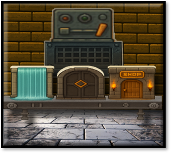We will be starting out with these types of doors.
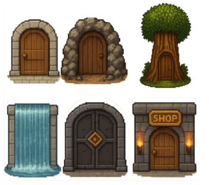Create 2 New Groups
We are going to start to create a Door System. Since we have a number of doors, we are going to want to throw these doors into their own folders in the Game Maker Sprite, and Object Folders. In Game Maker, folders are referred to as Groups. So, if you right click on either the Sprites, or the Object folder, you will not find an option to create a new folder, but you will find an option to create a new Group. So, that is what we want to do. And then just name this new Group ‘Doors’ in both the Sprite, and the Object folder.
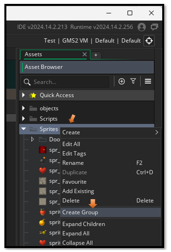Go to Photoshop
In Photo shop, inside of the the layers panel, we are going to want to separate these Doors onto Different Layers
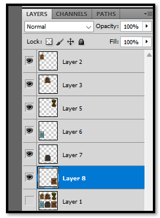
Now our doors can be 64px. So, make sure your grid is set to 64 in your Edit-- Preferences= Guides, Grid & Slices.
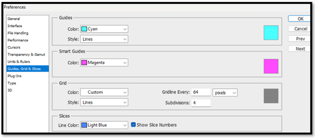
Turn this grid on so we can see it. In Photoshop, go to the top menu and select:
View- Show -Grid
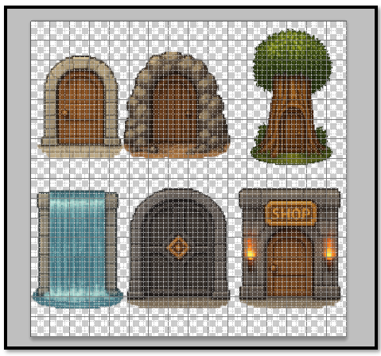Resize Each Door to fit inside of your grid
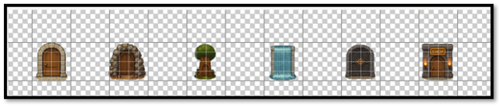Now create another photo shop document at size 64px and save each of these, in their own image file to be used for the door sprites.
Also create a new Doors folder to hold your new door sprites and then, Save these new Sprites to your Game Maker Sprites-Doors folder.
C:\Users\YOUR_USER_NAME\GameMakerProjects\My First Game Project
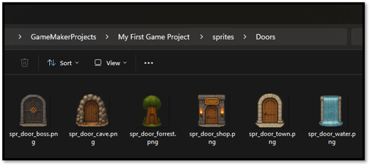
Go Back to Game Maker
Create Your Door Sprites and Objects
Now remember with GameMaker, just dragging in the images of our sprites will not work. GameMaker needs to work its own magic with each one of these sprites, so we will need to also create a sprite for each of these images through the GameMaker Asset Browser. We already have the normal Dungeon door, which right now is represented by the red door object and sprite. So, we need to make just 6 more door types.
YOUR CURRENT TASK:
- Create 6 new sprites in GameMaker (in a Doors folder)
- Create 6 new objects in GameMaker (in a Doors folder)
- Assign each sprite to its matching object
SPRITE NAMES:
- spr_door_town
- spr_door_cave
- spr_door_forest
- spr_door_water
- spr_door_boss
- spr_door_shop
- obj_door_town
- obj_door_cave
- obj_door_forest
- obj_door_water
- obj_door_boss
- obj_door_shop
OBJECT DOOR CODE
Your first door, that we have been using all along to transport the hero to the next floor, will be the first object that we will be working with. This door will be used as a normal progression door, and just allow the hero to travel to the next dungeon floor. The score board will be showing the next floor number, and the automatic maze generation will create a new maze for this floor, with treasures to collect. And eventually, , we will have monsters to fight. So, in other words, this door will be doing the same thing that it has always done.
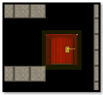Open your obj_door, so we can get to this door’s Create Code
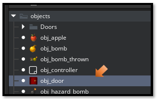If you double click on this door object you will find, we already have a few events sitting there.
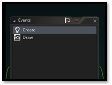We want to take this next code and place it before the animation code.
depth = -100;
door_type = "progression";
Your Create code for the obj_door should now look like this:

Adding Create Code for the other Door Objects
We will be adding simple code like we did for the first door to each of the other doors.
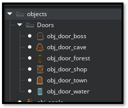Town Door
Next up will be the obj_door_town. So, add a Create event, and write this next code for it.
depth = -100;
door_type = "town";

Cave Door
depth = -100;
door_type = "cave";
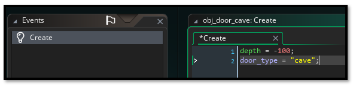
Forest Door
depth = -100;
door_type = "forest";
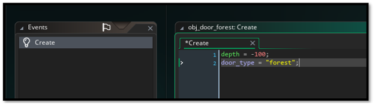
Water Door
depth = -100;
door_type = "water";
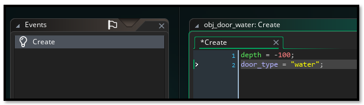
Boss Door
depth = -100;
door_type = "boss";
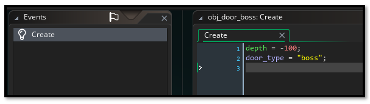
Shop Door
depth = -100;
door_type = "shop";
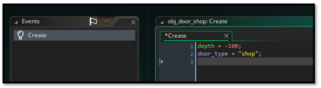
Escape Door
After thinking about this a bit, I have decided to add another door. This can be the final escape door, and will only appear after we have defeated the boss in the dungeon. It will be the ultimate door out of the dungeon, and one that can be used to go to any location.
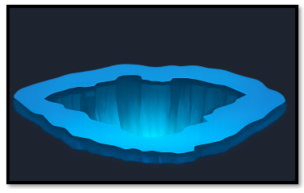So, this means we need to create another sprite and object for it. Create a 64 x 64 canvas inside of Photoshop and drag this door into it.
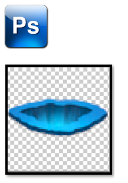
Save it to your Game Maker Sprite Door Folder
C:\Users\YOUR_USER_NAME\GameMakerProjects\My First Game Project \sprites\Doors
Create your sprite and your object in Game Maker and give them the following names.
spr_door_escape
depth = -100;
door_type = "escape";
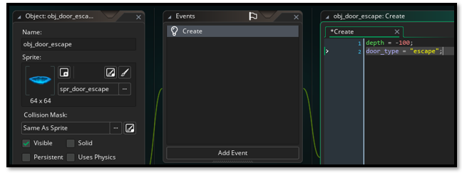
Object Controller
We need to add a line to obj_controller.
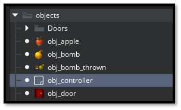
In the Create Event, inside of the obj_controller, find the section where we are assigning global variables. We need to add one more global variable to it. So, find this global section at the top.
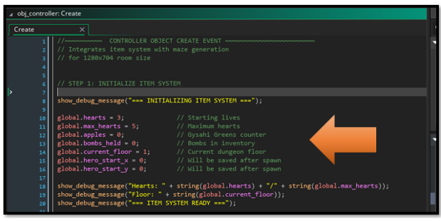We want to add this global variable to it.
global.dungeon_completed = false; // Track if player beat the dungeon
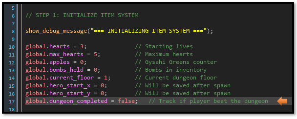
We will end this tutorial here, because before we can go on we will need to create a few rooms, and that will be what we will be moving onto Next.